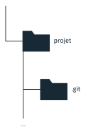
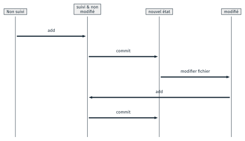
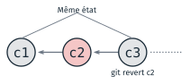
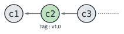

Git et le dépôt local#
Cette partie présente git, un logiciel qui enregistre les états successifs d’un projet, puis les commandes qui créent un dépôt et y enregistrent un premier état. Elle décrit ensuite les états par lesquels passe un fichier, et deux opérations sur les états déjà enregistrés : en annuler un, et en nommer un. Un TD l’accompagne, le TD 3a ; il est présenté en fin de page.
À quoi sert git#
Un projet évolue : on ajoute une fonction, on corrige une erreur, on réécrit
un paragraphe. Garder des copies datées du dossier (projet_v2,
projet_final_corrige) permet de revenir en arrière, mais ne montre pas ce
qui a changé d’une copie à l’autre, et devient ingérable à plusieurs. Git
est un logiciel de gestion de versions : il enregistre, à la demande, l’état
de tous les fichiers d’un projet, et garde la liste de ces états avec leur
auteur, leur date et une description.
Git sert à quatre choses, que la séance et le cours 6 traitent tour à tour :
versionner un projet : enregistrer ses états successifs et revenir à l’un d’eux ;
travailler à plusieurs : modifier le projet en parallèle, puis réunir les modifications ;
héberger le projet sur un serveur, une forge comme GitHub ou GitLab, pour le partager et en garder une copie : c’est le sujet du cours 6 ;
l’employer depuis différents outils : la ligne de commande, des logiciels dédiés, les éditeurs de code comme VS Code.
La séance emploie git en ligne de commande, sur un seul poste. Seul sur un projet, git sert de sauvegarde de chaque état, et permet de mettre à disposition les versions terminées. À plusieurs, il permet de travailler sur des états parallèles sans se gêner, puis de mettre le travail en commun. Le projet de la séance 4 emploie git seul ; le cours 6 et le projet de la séance 7 l’emploient à plusieurs.
Le dépôt#
Un projet suivi par git s’appelle un dépôt, en anglais repository. Tout
ce que git enregistre, les états successifs et leur description, est écrit
dans un dossier caché, .git, à la racine du projet.

Le dossier .git est dans le dossier du projet, à côté des fichiers de
travail.#
La commande git init, tapée dans le dossier du projet, crée ce dossier :
$ git init
Dépôt Git vide initialisé dans /…/projet_2/.git/
Les fichiers du projet, ceux qu’on modifie, forment la copie de travail.
Le dossier .git contient l’historique. Supprimer .git efface tout
l’historique du projet, et laisse les fichiers de travail tels qu’ils sont.
Git enregistre avec chaque état le nom et l’adresse de son auteur. Sur un
poste partagé, ils se règlent dans le dépôt, une fois après git init : la
page Git et Git Bash donne les
commandes.
Le commit#
Un commit est un état enregistré du projet : le contenu de tous ses fichiers à un moment donné, avec un message qui décrit la modification, le nom de l’auteur et la date. On peut revenir à tout commit, et comparer deux commits entre eux.
Chaque commit a un identifiant, une empreinte de 40 caractères
hexadécimaux calculée sur son contenu (l’empreinte est présentée au cours 5).
Git en affiche le plus souvent les sept premiers, comme 71e283a, qui
suffisent à désigner un commit dans un projet. Chaque commit désigne aussi son
parent, le commit qui le précède : les commits forment une chaîne. Les
schémas de la séance la dessinent de gauche à droite, du plus ancien au plus
récent, avec une flèche de chaque commit vers son parent.
Juste après git init, le dépôt ne contient aucun commit. Le premier commit
du projet, souvent appelé initial commit, est le seul à n’avoir pas de
parent ; git l’affiche comme « commit racine ».
Le cycle de vie d’un fichier#
Git n’enregistre pas d’office tous les fichiers du dossier. Un fichier passe par plusieurs états, et deux commandes le font passer de l’un à l’autre.

Les états d’un fichier, et les commandes qui le font passer de l’un à l’autre.#
Un fichier qu’on vient de créer est non suivi : git le voit dans le
dossier, mais ne l’enregistre pas. git add le fait passer dans la zone de
préparation, en anglais staging area : l’ensemble des modifications qui
entreront dans le prochain commit. git commit enregistre ce qui est dans la
zone de préparation en un nouveau commit. Un fichier suivi qu’on modifie
ensuite repasse à l’état modifié ; pour que la modification entre dans le
commit suivant, on refait git add, puis git commit.
Commande |
Ce qu’elle fait |
|---|---|
|
ajoute le fichier, ou sa modification, à la zone de préparation |
|
ajoute un dossier et tous ses fichiers |
|
ajoute tout le dossier courant |
|
enregistre la zone de préparation en un nouveau commit, avec le message donné |
|
affiche l’état de chaque fichier |
git status affiche à chaque étape ce que git voit. Dans un dépôt neuf, avec
un fichier README.md qu’on vient de créer :
$ git status
Sur la branche master
Aucun commit
Fichiers non suivis:
(utilisez "git add <fichier>..." pour inclure dans ce qui sera validé)
README.md
Après git add README.md, le fichier est dans la zone de préparation, que git
appelle « modifications qui seront validées » :
$ git add README.md
$ git status
Sur la branche master
Aucun commit
Modifications qui seront validées :
(utilisez "git rm --cached <fichier>..." pour désindexer)
nouveau fichier : README.md
Après le commit, plus rien n’est à enregistrer :
$ git commit -m "ajout du README"
[master (commit racine) 71e283a] ajout du README
1 file changed, 1 insertion(+)
create mode 100644 README.md
$ git status
Sur la branche master
rien à valider, la copie de travail est propre
Sorties relevées avec git 2.43 en français. La version anglaise de git écrit les mêmes informations en anglais : Untracked files, Changes to be committed, nothing to commit, working tree clean.
On ne peut revenir qu’à un état enregistré par un commit. Il faut donc en faire régulièrement, chaque fois qu’une modification forme un tout : une fonction ajoutée, une erreur corrigée.
Annuler un commit#
git revert annule un commit en créant un nouveau commit, qui fait l’inverse
du commit visé : il retire ce que celui-ci avait ajouté, et remet ce qu’il
avait retiré.

git revert c2 crée c3, qui défait c2 : le projet revient à l’état de
c1, et c2 reste dans l’historique.#
git revert <identifiant du commit>
Le commit annulé reste dans l’historique, et le nouveau commit s’y ajoute.
L’historique garde donc la trace de l’erreur et de sa correction. Git ouvre un
éditeur dans le terminal pour le message du nouveau commit, déjà rempli :
Revert "<message du commit annulé>". Le TD 4b fait
annuler un commit de cette façon.
Étiqueter un commit#
Un tag, ou étiquette, donne un nom choisi à un commit, par exemple v1.0.
Il sert à marquer les versions du projet : on retrouve la version 1.0 par son
nom, sans chercher son identifiant.

Le tag v1.0 désigne le commit c2.#
git tag -a <nom du tag> -m "<message du tag>"
La commande pose le tag sur le commit courant. git tag, sans argument, liste
les tags du dépôt. Le TD 6a pose le tag v1.0 sur la
première version du projet.
TD de la partie#
TD 3a — Un premier dépôt, 15 minutes : configurer un alias qui affiche le graphe du projet, créer un dossier et y initialiser un dépôt, puis y enregistrer un premier fichier en un premier commit.
Les TD des autres parties sont dans Travaux dirigés de la séance 2.